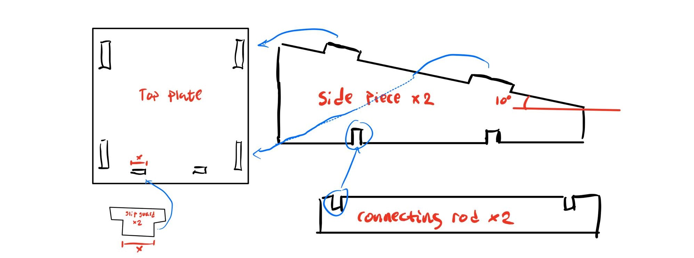

Assignment 2 -
laser & vinyl cutting

Laser cutting
Project Information
The objective of my second assignment was to laser cut an object. The only requirements were that the project be parametric and pressfit.
inspiration and design
Due to the nature of the assignment, I decided to laser cut something that I could use in my day to day life. Therefore i decided to laser cut a stand for my laptop. The dimensions of my laptop are as follows (W x D x H): 323.4 x 226 x 16.4 mm wich gives me the measurements I need to begin scetching the stand.
First I started by schetching a rough draft as to how i wanted the stand to function. After a little test with a spirit level, I found a 10° tilt upwards to be the best choice for my computer. Below you can see my first, rough draft:

After due consideration, I deduced that this design vas not as sleek as I had initially planned. Therfore I got back to the drawing board. I changed the design by removing material where i deduced it would be redundant and adding removeable slip guard pieces. This second (and final draft) can be seen here below:
While drawing it was important to ensure that the drawings were parametric as stated in the assignment desription. While keeping an eye on the laptop's measurements, these were the parameters I assigned to the drawing:

Kerf & CAD drawing
Now that I had completed the design, I had to perform the "Kerf" test. The test is designed to minimize loss of material due to the laser following the middle of our drawn lines. When we do the Kerf test, we can offset the laser so that it doesn't remove material that it shouldn't. To perform the test we drew up a siple shape with slits and then measured how much material was lost, and divided by the number of cuts in between. The measurments and calculations yielded a Kerf of 0.18 mm. Here you can also view the video I consulted during the process of the laser cutting. This video shows how to set up the laser cutter according to the resulting Kerf, as well as othe practical information regarding exporting the file and such. Please note that the video is in Icelandic, but the settings the author uses are in English so the information the video provides could also prove useful for non-Icelandic speakers. Below you can see a 2D schematic of the design both in Fusion 360 and in Inkscape along with a 3D rendered model of the stand:
.png)
.png)
.png)
laser cutting & results
The program used in the laser cutting process is Inkscape. The program is pretty straightforward, an with a little advisement from my tutor I managed to laser cut my stand. The assignment Laser cutting was a success aside from one problem. The plate used to cut from was considerably warped, so the assembly proved probematic. However I managed to put everything together and after pressing the plate with a heavy atlas it corrected itself considerably. All in all a successful project. Below you can see some photos of the completed and assembled stand.
.jpg)
"click here to download the files"
Vinyl cutting
Project information
The second part of the project was to make a sticker, using the vinyl cutter. There were no design parameters to speak of, only requirement was to create something and make sure the area did not exceed 50x100 cm
Design
I decided to make a sticker which I could put on my computer, just for fun. The sticker I chose to create was a picture of three penguins. The reason why was that I wanted something a little more detailed than a simple shape, and also I think penguins are neat. The image i chose of the web can be seen here below:
I also wanted to make sure the sticker would keep it's original orientation, so I added lines between the penguins to connect them, while also removing the eyes of the youngling.
Next I had to convert the .png to a vector file. This prevents the image from becoming pixelated and is required for the vinyl cutter. The following video show the process. (what the video does not show is what is clicked in the dropdown from path. What is clicked is "Trace bitmap or Shift + alt + B") In the video, when zoomed in, you can clearly see the pixelation of the original image, but after converting to a vector graphic there is no pixelation. During the process of creating the sticker I followed this video and watched from 2:13 and through to the end.
cutting the sticker
What I looked up